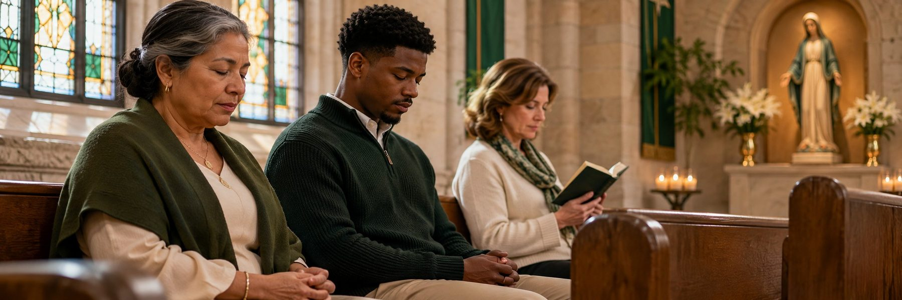

Choose a setting
Shape the experience around your community: five Sundays, one weekend, or five nights.
A place within parish life
Consider I Love Being Catholic as a continuing resource for your parish’s adult formation. It can complement existing opportunities for learning and prayer, while leaving the Order of Christian Initiation of Adults and sacramental preparation in their proper roles. At least three formats offer ways to shape the experience around your community.
Find a starting point in three questions
A quick way to think it through with your parish team. It is a prompt for conversation, not a rule. Every format covers the same five units.
A parish preaching event over five Sundays
Over five consecutive Sundays, introduce one unit each week through written material inserted in the parish bulletin. The priest speaks about the topic at Masses, connecting it with the lectionary readings of the day. After Mass, parishioners gather in small groups for discussion, using packets prepared for that purpose.

A parish retreat weekend
Present the five units over one parish retreat weekend: one presentation and discussion on Friday evening, three presentations with discussion on Saturday, and the concluding presentation and discussion on Sunday. Parishioners come together in their own parish for a weekend of learning and conversation with fellow parishioners.

A parish mission over five nights
Invite a missionary to offer the main subject for consideration on each of five nights. The mission includes written material, discussion material, and participant material. Each presentation takes place within a liturgical or paraliturgical service consisting of hymns, music, and prayers.

Parish groups and families accompanying OCIA
Existing parish groups, such as the Knights of Columbus, offer another setting for the program.
It can also accompany the Order of Christian Initiation of Adults by serving the Catholic spouses, family members, and extended families of OCIA catechumens. As the catechumens study the introduction to the faith, their families can follow a complementary track of learning and reflection.
Not sure which format fits?
Begin by considering which format best serves your parish. Each brings the five connected units into a setting with opportunities for discussion and participation.